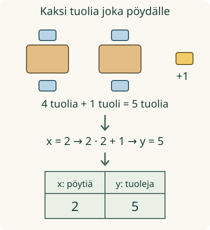

<link rel="stylesheet" href="lesson.css">
<section class="ft-lesson">
  
<section data-teaching-step="1-frame1" data-lesson-role="teaching-step"><div class="lesson-intro"><h2>Kerhoillan tuolilista</h2></div>
  <p>Aava varaa joka pöydälle kaksi tuolia ja ohjaajalle yhden oman tuolin. Miten listaan saa näkyviin, montako tuolia tarvitaan eri pöytämäärillä?</p>
  <p><strong>Tavoitteesi:</strong> rakennat arvotaulukon, jonka jokaisella rivillä syöte ja sen tulos kuuluvat yhteen.</p></section>
<section data-teaching-step="1-frame2" data-lesson-role="teaching-step"><h3>Pöydistä luvuiksi</h3>
  <p>Laita pöydän kummallekin puolelle tuoli. Lisää ohjaajan tuoli erilleen. Kahdella pöydällä tarvitset 2 + 2 + 1 = 5 tuolia.</p>
  <figure data-lesson-role="worked-example"></figure>
  <p>Nimetään pöytien määrä kirjaimella <strong>x</strong> ja tuolien määrä kirjaimella <strong>y</strong>. Sääntö on <strong>y = 2x + 1</strong>. Merkintä 2x tarkoittaa 2 · x.</p></section>

  
<section data-teaching-step="2" data-lesson-role="teaching-step">
<h3>Esimerkki: kirjaa koko pari</h3>
  <p>Kun x = 0, pöytiä ei ole. Ohjaajan tuoli tarvitaan silti: y = 2 · 0 + 1 = 1. Kun x = 2, y = 5. Kirjaa jokainen syöte ja sen tulos samalle riville.</p>
  <table><caption>Tuolit eri pöytämäärillä</caption><thead><tr><th scope="col">x: pöytiä</th><th scope="col">y: tuoleja</th></tr></thead><tbody><tr><td>0</td><td>1</td></tr><tr><td>2</td><td>5</td></tr><tr><td>5</td><td>11</td></tr></tbody></table>
</section>

  
<section data-teaching-step="3" data-lesson-role="teaching-step">
<h3>Älä lisää kahta vain siksi, että rivi vaihtui</h3>
  <p>Syöte muuttuu tässä ensin 0 → 2. Pöytiä tulee <strong>kaksi</strong> lisää, joten tuoleja tulee neljä lisää: 1 → 5. Sitten pöytiä tulee kolme lisää, joten tuoleja tulee kuusi lisää: 5 → 11.</p>
  <p>Lisäys +2 pätee, kun <strong>x kasvaa yhdellä</strong>. Taulukon rivit voivat olla muussakin järjestyksessä. Pari 2 ja 5 tarkoittaa aina samaa.</p>
</section>

  
<section data-teaching-step="4" data-lesson-role="teaching-step">
<section data-lesson-role="question"><h3>Ajattelutauko</h3><p>Jos x = 3, voiko y olla 7?</p><details data-lesson-role="answer"><summary>Paljasta ajatus</summary><p>Voi. Kolme kahden tuolin ryhmää ja yksi erillinen tuoli: 2 · 3 + 1 = 7.</p></details></section>
</section>

  
<section data-teaching-step="5" data-lesson-role="teaching-step">
<h3>Siirto: kaikki tulokset eivät kasva</h3>
  <p>Varastossa on 8 pakettia. Kun noudettu määrä on x, jäljellä on y = 8 − x. Syöte 2 antaa tuloksen 6, mutta syöte 5 antaa tuloksen 3. Taulukko voi siis kuvata myös vähenemistä.</p>
  <p>Jos salissa on aina neljä ilmoitustaulua, sääntö on y = 4. Sekä x = 0 että x = 5 antavat y = 4. Eri syötteet saavat antaa saman tuloksen. Tämäkin on funktio.</p>
</section>

  
<section data-teaching-step="6" data-lesson-role="teaching-step">
<section data-func-table aria-label="Rakenna arvotaulukko" data-audience-columns><div data-visual-column><h3>Rakenna oma arvotaulukko</h3>
<p>Kirjoita tulokset syötteille 0, 2 ja 5. Voit aloittaa miltä riviltä tahansa. Taulukon jokainen täytetty rivi kirjaa yhden parin.</p>
<label>Tilanne<select data-rule disabled><option value="seats">Kerhoilta: y = 2x + 1</option><option value="stock">Varasto: y = 8 − x</option><option value="fixed">Ilmoitustaulut: y = 4</option></select></label>
<p><strong data-rule-text>y = 2x + 1</strong></p>
<p data-rule-meaning>x = pöytien määrä, y = tuolien määrä. Kaksi tuolia joka pöydälle ja yksi ohjaajalle.</p></div><div data-response-column><table><caption>Oma kirjaus: x ja y samalla rivillä</caption><thead><tr><th scope="col">Syöte x</th><th scope="col">Tulos y</th></tr></thead><tbody data-rows><tr><th scope="row">0</th><td><input type="number" aria-label="Tulos y, kun x on 0" disabled></td></tr><tr><th scope="row">2</th><td><input type="number" aria-label="Tulos y, kun x on 2" disabled></td></tr><tr><th scope="row">5</th><td><input type="number" aria-label="Tulos y, kun x on 5" disabled></td></tr></tbody></table>
<div class="ft-actions"><button type="button" data-check disabled>Tarkista taulukko</button><button type="button" data-reorder disabled>Vaihda rivien järjestys</button><button type="button" data-clear disabled>Tyhjennä tulokset</button></div>
<output data-feedback data-verdict="neutral" aria-live="polite">Vuorovaikutus odottaa. Voit tehdä saman taulukon paperille yllä olevan mallin avulla.</output>
<details data-lesson-role="hint"><summary>Tarvitsen vihjeen</summary><p data-help-text>Kerro pöytien määrä kahdella. Lisää yksi tuoli vain kerran.</p><p>Lue ensin rivin x. Käytä sitä säännössä. Kirjaa saatu y juuri samalle riville.</p></details></div></section>
</section>

  
<section data-teaching-step="7" data-lesson-role="teaching-step">
<details data-lesson-role="teaching-step"><summary>Tutki lisää: riittääkö kolme riviä kertomaan säännön?</summary><p>Jos sääntöä ei ole annettu, äärellinen taulukko ei yleensä määrää yhtä ainoaa sääntöä. Kolme sopivaa riviä kertoo, että sääntö sopii niihin. Tässä harjoituksessa sääntö on annettu jo alussa.</p><p>Kokeile paperilla myös y = 3x − 2: syöte −1 antaa 3 · (−1) − 2 = −5. Negatiivinen luku sopii lukusäännön syötteeksi, vaikka negatiivinen pöytien lukumäärä ei sovi kerhoillan malliin.</p></details>
</section>

  <details data-lesson-role="teacher-note"><summary>Opettajalle ja ilman näyttöä</summary><p>Kohde on vuosiluokkien 7–9 arvotaulukon rakentamisprosessi. Pieni lukumalli tekee parien merkityksen näkyväksi; se ei muuta kanonista ikä- tai esitietorajaa. Käytä paperipöytiä ja nappeja: kaksi nappia jokaiselle pöydälle, yksi erilleen. Oppilas kirjaa itse parit (0, 1), (2, 5), (5, 11). Siirtäkää kokonaisia rivejä ja tarkastakaa, säilyykö merkitys.</p><p>Taulukon lukeminen on vahva tuki, ei lisätty pakollinen esitieto. Kerto-, vähennys- ja sijoituslaskun vaiheet annetaan näkyviin. Kuvasta ei mitata oikeita pöytiä. Paikallinen tarkistus ei osoita itsenäistä tai viivästettyä osaamista. Kuvaajan piirtäminen jää erilliseen opetukseen.</p></details>
  
<section data-teaching-step="8" data-lesson-role="teaching-step">
<section data-lesson-role="question"><h2>Lähtökysymys</h2><p>Mitä taulukon rivi x = 5, y = 11 kertoo kerhoillassa?</p><details data-lesson-role="answer"><summary>Paljasta ratkaisu</summary><p>Viidelle pöydälle tarvitaan tämän suunnitelman mukaan yksitoista tuolia.</p></details></section>
</section>

</section>
